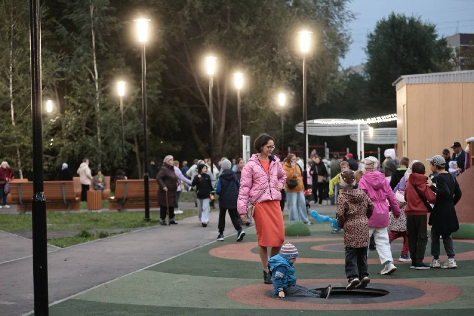

01
Общество и городская среда · событие дня
Обновляем проезды, тротуары, ливневки, заездные карманы, площадки под мусорные контейнеры
В Ульяновске привели в порядок 84 двора, работы продолжаются. Проверил качество ремонта возле домов №34 и №36 на Камышинской, №19 на Жигулёвской, №25 корпус 1 на Самарской. ✅ На контроле благоустройство общественных пространств. Наращивать темпы помогает нацпроект «Инфраструктура для жизни».…